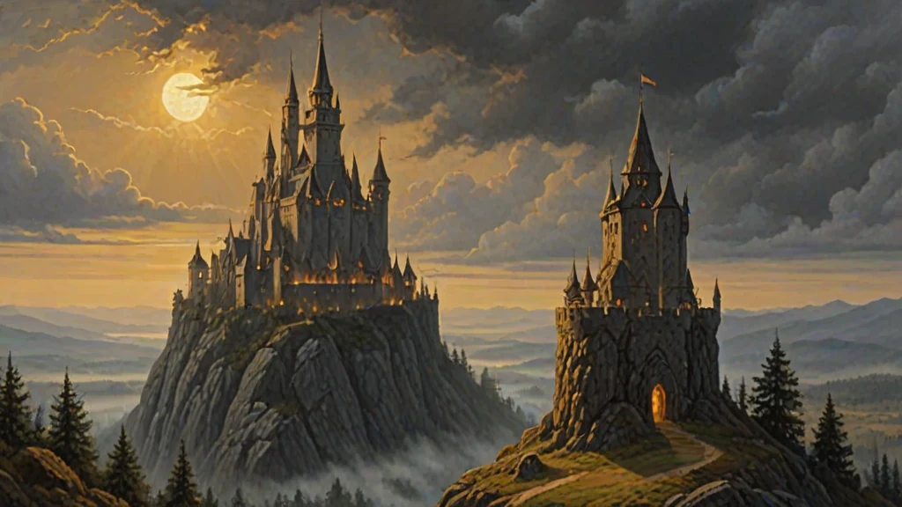

Campaña Oficial · Escenario Cerrado

⚔️ Valdris · Tierras del Sol Quebrado
Juego RPG completo con escenario fijo y no editable. Recorre sus comarcas conectadas, domina cotos de caza, abate campeones alfa, completa el bestiario y desvela la crónica completa del Sol Quebrado.
7 comarcas
12 zonas de caza
12 campeones alfa
3 laberintos · 3 mazmorras
Crónica de 16 capítulos
Sin partida iniciada todavía en este navegador. Crea tu héroe y comienza en Albaferro.
⚔️ Jugar Valdris